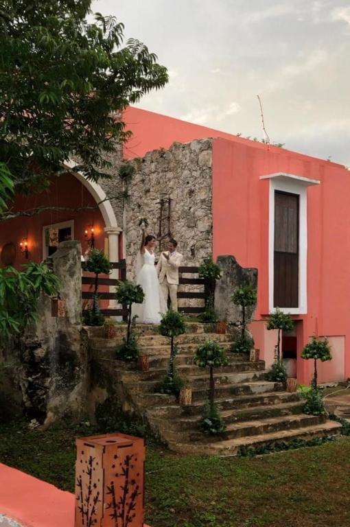
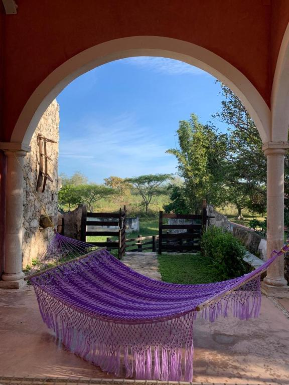
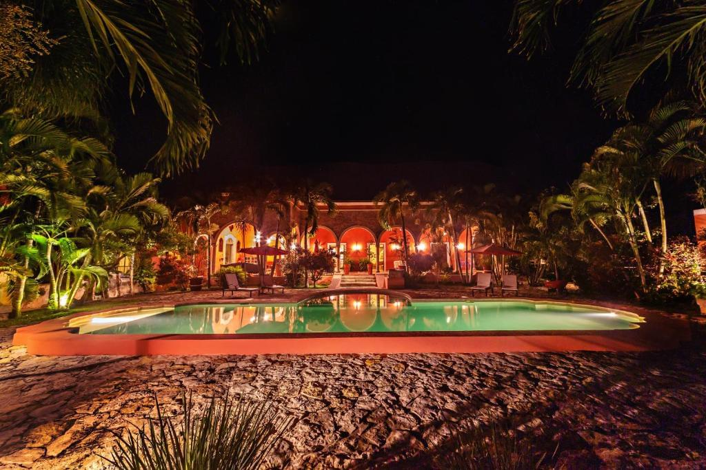
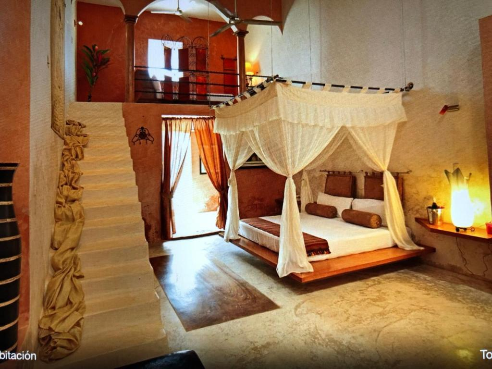
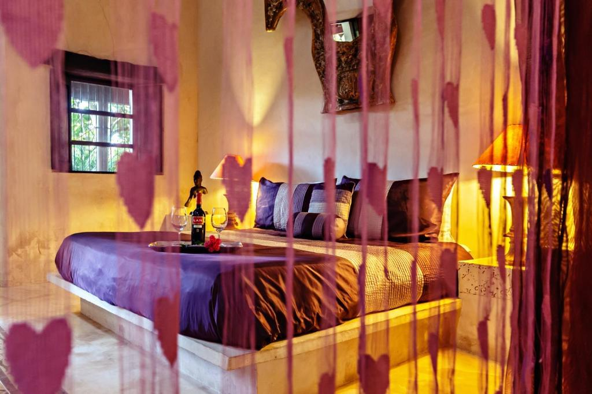
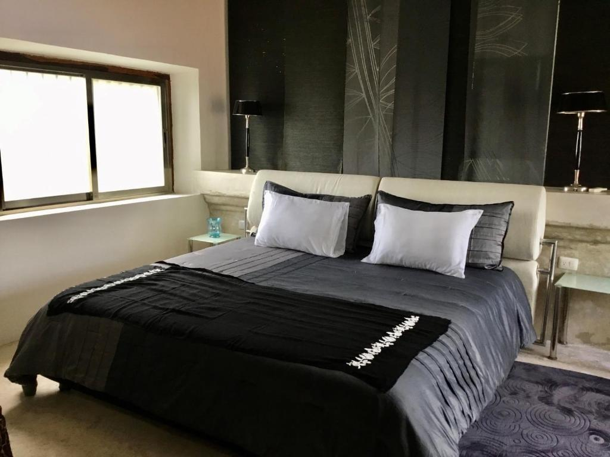
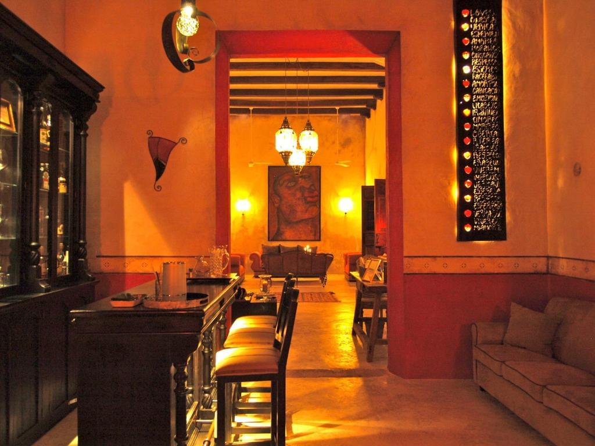

Nuestros juegos están destinados a un público ADULTO mayor de 18 años. Haga clic en "Aceptar" para confirmar su edad. Haga clic en "Listo".


Hacienda Sacnicte
Sobre nosotros
Hacienda Sacnicte es una excepcional ex-hacienda histórica situada en un pintoresco entorno, a sólo 4 kilómetros de la ciudad de Isamal, y a una hora en coche de la famosa Chichén Itzá. Este lugar le sorprenderá por su belleza y su ambiente único.
Hacienda Sacnicte no es sólo un lugar para relajarse, es un auténtico pedazo de historia que invita a sumergirse en la atmósfera del México antiguo, disfrutar del lujo y la paz y, por supuesto, explorar el rico patrimonio cultural de este fascinante país.

Habitaciones




Hacienda Sacnicte ofrece a sus huéspedes habitaciones de lujo que encarnan una combinación de decoración tradicional mexicana y comodidades modernas. Cada habitación tiene aire acondicionado y ofrece una acogedora zona de estar, un escritorio para trabajar y un cuarto de baño privado con ducha y WC. El encanto del lugar se desprende de cada detalle del interior.
Para aquellos que quieran mantenerse conectados, Hacienda Sacnicte ofrece Wi-Fi gratuito, lo que permite a los huéspedes disfrutar de la comodidad y la libertad de navegar por Internet rodeados de naturaleza.
Ubicación conveniente
Los huéspedes de Hacienda Sacnicte pueden visitar fácilmente el cercano sitio arqueológico de Itzamatul, que está a sólo 15 minutos en coche. Y si deciden dirigirse a Mérida, podrán llegar a esta pintoresca ciudad en sólo una hora.
El Hotel Hacienda Sacnicte se enorgullece de su servicio de primera clase. La recepción 24 horas ofrece a los huéspedes asistencia constante. La propiedad también cuenta con un pintoresco jardín y una acogedora terraza, lugares ideales para relajarse. Para mayor comodidad de los huéspedes, el hotel ofrece servicios de reuniones y excursiones, así como consigna de equipajes.